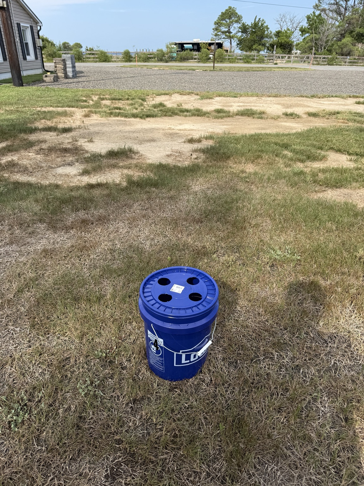

We built some mosquito buckets.
Then we started asking questions.
Real buckets, real mosquitoes, questionable smells, and careful notes. We’re watching what happens when ordinary homeowners use Bti-treated standing water as a mosquito-control tool around the places where we actually live.
Make an attractive nursery that never graduates mosquitoes.
A dunk bucket is not supposed to repel a female mosquito. The hope is that she chooses the water as a place to lay eggs, while Bti in the water kills feeding larvae before they become biting adults.
This is not a laboratory.
Dogs knock buckets over. Shade changes. Rain happens. Recipes differ. We record those events instead of pretending they didn’t happen.
The goal is useful backyard evidence, not a claim that we have run a controlled academic trial.
Eight buckets. Two island study sites.
The public record describes the study areas without publishing private residential street numbers. Bucket IDs include their color group so Pink B4 and Blue B4 can never be confused.
Six original residential-area buckets
Installed August 7. Pink B0, B1, B3, B4, B5 and B6 use perforated lids, water, weathered oak leaves, and one whole mosquito dunk each.
The six buckets span two adjoining properties. Four are on one property and two on the neighboring property. A whole dunk is more Bti than this small water surface requires under the current product label, so that original dose remains part of the field record.
Two Community Center buckets
Installed August 22. Blue B4 sits southeast of the parking lot toward the marshfront side. Blue B6 sits northwest of the Community Center toward the roadfront side.
Each uses a blue bucket, four lid holes, about ¼ dunk, and a heavy load of fresh marsh vegetation. After seven days these were distinctly murkier, scummier and smellier than the pink buckets.
picnic table B6
tree B0 B1 B4
hen house
Measured cluster distances: B5–B3 94 ft; B5–B6 92 ft; B3–B6 42 ft; B3–B0 60 ft; B6–B0 40 ft. Diagram not to scale.
NW side B4
SE / marshward
Compass descriptions are approximate because the island and property sit at an angle. Roadfront/marshfront are the clearest field references.


Three weeks produced evidence, but not a verdict.
positively identified larvae
That is an observation, not proof that mosquitoes never used the buckets. Bti-treated larvae may die before we happen to inspect them.
positively identified eggs
Our first craft-stick-and-tape scraping method was too crude to support a confident egg count.
dog-assisted spills
Pink B3 and Pink B4 lost substantial water. Those accidents are part of the data now.